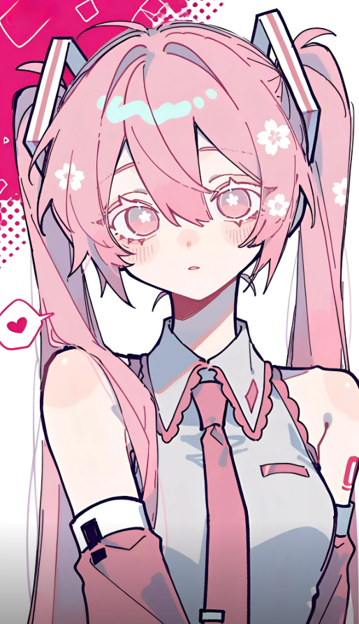

⌘
将一篇论文
拆成可运行的实验
她会标记关键假设、复现核心结果，再把过程整理成下一位研究者可以继续使用的记录。

把未知，变成
可以验证的答案。
IDENTITY / 角色档案
她擅长捕捉微小却重要的异常，把杂乱的信息整理成可验证的问题。机械发饰既是通信终端，也是她连接伙伴与知识网络的接口。
02 / RESEARCH SIGNAL
点击频道，读取不同方向的角色设定。
她会标记关键假设、复现核心结果，再把过程整理成下一位研究者可以继续使用的记录。
“收到一个MOMO-01 · FIELD NOTE 027
值得追下去的信号。”
VISUAL DNA